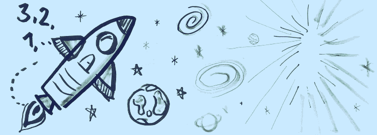

Auf dieser Website ist Platz für das, wofür mein Twitterprofil @charakterziffer nicht ausreicht. Mein Blog ist als Plus zu meinen Tweets gedacht, eben „@cz+“. // Die letzten drei Artikel:
Mich stimmt es traurig, wenn jemand stolz verkündet, in Mathe immer eine Niete gewesen zu sein. Weil das ja nur etwas für Nerds sei, viel zu kompliziert und im Alltag ziemlich unbrauchbar.
Natürlich gibt es wie in jeder Wissenschaft auch in Mathematik superspezialisierte Bereiche, die ohne Fachwissen unverständlich sind und deren Nutzen nur für einen kleinen Bereich von Bedeutung sind. Andererseits finde ich bestimmte Themen der Mathematik praktisch (z. B. Bruchrechnen), verblüffend (z. B. Seil am Äquator verlängern) oder wirklich schön (z. B. Parkettierung).
Besonders faszinierend finde ich, wenn aus eher kleinen Vorgaben ein überraschend komplexes Ding entsteht, das sich nicht intuitiv vorhersagen lässt. Ein Beispiel dafür ist ein zellulärer Automat (englisch: cellular automaton, kurz „CA“).
Wir bauen einen zellulären Automaten
Viel braucht man dafür nicht, eigentlich nur eine große, leere Fläche mit einzelnen Bildpunkten („Zellen“). Unser Automat soll eindimensional werden, das heißt, er arbeitet die Fläche zeilenweise stur von oben nach unten ab. Als Ausgangspunkt färben wir in der ersten Zeile die mittlere Zelle schwarz.
Jetzt kommt die Kleinigkeit, die unseren zellulären Automaten zum Laufen bringt: Wir legen eine Regel fest, wie die Zellen ab der zweiten Zeile eingefärbt werden sollen. Dazu schauen wir uns für jede Zelle immer die drei Nachbarn in der vorigen Zeile an (schräg links darüber, direkt darüber und schräg rechts darüber). Wenn davon zum Beispiel alle drei weiß sind, dann legen wir mal fest, dass die fragliche Zelle in der neuen Zeile schwarz werden soll.
Insgesamt gibt es acht Fälle, wie die drei Zellen in der vorangegangenen Zeile aussehen können. Für jeden dieser Fälle legen wir fest, was mit der Zelle darunter passieren soll. Ich hab zum Beispiel mal folgendes ausgewählt:
Für jede der acht Positionen bestimmen wir entweder 0 (bleibt weiß) oder 1 (wird eingefärbt), womit insgesamt 255 verschiedene Regeln möglich sind. Unsere gewählte Regel lässt sich kurz als 01001001 schreiben. Lesen wir das als Zahl im Binärsystem, können wir das in die Dezimalzahl 73 übersetzen, das ist verständlicher. Nun wird es Zeit für die Praxis, wir starten unseren zellulären Automaten …
Einfache Regel, kompliziertes Ergebnis
Die Regel (zwischen 0 und 255) sieht grafisch so aus:
Und so füllt der Automat damit das Feld:
Oha, es entsteht ein überraschend kompliziertes Muster! Und das Beste: Der Automat hier ist interaktiv. Die grünen Elemente oben lassen sich ändern. Klicke zum Beispiel die grafische Darstellung der Regel an (die acht T-förmigen Kästchen). Du kannst die Nummer einer Regel auch in das Textfeld eingeben (muss zwischen 0 und 255 liegen). Mir gefallen recht gut die Regeln 30, 161 oder 225.
Außer der Regel selbst kannst du noch die Startbedingungen verändern. Klicke weitere Pixel in der ersten Zeile an und färbe sie um. Um verschiedene Ausgangszeilen zu testen, finde ich die Regel 109 recht interessant.
Wer hat’s erfunden? Die Natur!
Noch bevor im Jahr 1940 Stanislaw Ulam und John von Neumann das Konzept zellulärer Automaten vorgestellt und weiterentwickelt haben, hat die Natur die Musterbildung nach Regeln schon längst praktiziert. Zum Beispiel entstehen Zebrastreifen nach einem vergleichbaren Prinzip. Besonders eindrucksvoll finde ich es beim Weberkegel. Das Muster auf dem Gehäuse dieser Muschel sieht der Regel 30 verblüffend ähnlich.
Übrigens bietet die mathematischen Suchmaschine Wolfram Alpha für Elementare Zelluläre Automaten (so wie unserer) eine Übersicht aller 255 Regeln.
Darüber hinaus gibt es noch andere Typen zellulärer Automaten. Bei eindimensionalen Automaten zweiter Ordnung wird zusätzlich noch die Zeile über der direkt darüberliegenden bei der Musterbildung berücksichtigt. Und Automaten mit 2,5 Dimensionen betrachten nicht die Zeile darüber, sondern die Nachbarzellen ringsherum. Das bekannteste Beispiel dafür ist Conway’s Game of Life, wo sich Pixelgruppen wie lebendige Wesen über die Fläche bewegen. Bei anderen Varianten spielen auch verschiedene Farben eine Rolle – es gibt viel zu entdecken!
Klar, man kann alles genau planen, sich Gedanken machen, abwägen, theoretisieren, sturkturieren, projektieren und sich eine gute Strategie überlegen. Und bestimmt geht bei dem geplanten Vorhaben dann weniger schief. Vielleicht wird es aber auch gar nichts, weil man sich vor allem die Schwierigkeiten konzentriert, auf die offenen Fragen und zu klärenden Dinge. Und irgendwie hat man noch gar nichts zu Papier gebracht, obwohl man gefühlt schon so viel Arbeit reingesteckt hat.
Da hilft nur eins: anfangen. Erst mal grob, nur mal die Idee skizzieren, das unbestimmte Gefühl einfangen. Die Details kommen dann schon noch – oder vielleicht auch nicht, wir werden sehen. Womöglich wird es erst mal nicht schön und trifft so gar nicht, was man sich eigentlich vorgestellt hat. Aber nicht schlimm: Es ist der erste Versuch. Überarbeitungen sind immer einfacher, als mit Nichts anzufangen.

Beim Zeichnen dieser Rakete hab ich ausnahmsweise mal mit dem dicksten Stift begonnen und mit dem schwächsten aufgehört. Also keine feine, behutsame Vorskizze, sondern mit Schmackes losgelegt!
Was gibt es nicht alles für motivierende Sprichwörter, die das Anfangen betreffen: Der Anfang ist die Hälfte des Ganzen(Aristoteles), In einem Jahr wirst du dir wünschen, du hättest heute angefangen.(Karen Lamb), Wanderer, es gibt keinen Weg, der Weg entsteht im Gehen.(Antonio Machado). Und natürlich von Hermann Hesse: Jedem Anfang wohnt ein Zauber inne. Um diesen Zauber zu spüren, dürfen die möglichen Hindernisse nicht zu viel Aufmerksamkeit bekommen.
Ich wünsche euch für dieses Jahr viele zauberhafte Anfänge. Gebt einem Impuls ruhig nach und schaut, wohin er euch führt. Möge durch euer Anfangen viel Gutes entstehen!
Und nun halte ich es mit einem Spruch von Sheryl Sandberg, der genauso das Beenden betrifft: Done is better than perfect – besser vollbracht als vollkommen. Man muss irgendwann aufhören, an den Details zu fummeln, hin und her zu überlegen, weiterzufeilen. Sondern einfach enden, das Entstandene aus der Hand geben und veröffentlichen. Hier bitte!
Im Rückblick passt mein guter Vorsatz dieses Jahr wie die Faust aufs Auge. Ich hatte beschlossen, jeden Monat auf etwas Bestimmtes zu verzichten – was dann coronabedingt zeitweilig die ganze Welt machen musste. Bei mir waren es Gewohnheiten, die ich einen Monat lang mal hinterfragen wollte, um zu sehen, wie und ob sie mir gut tun.
Januar: Kein Vorsatz
Keinerlei Verpflichtungen, keine Selbstoptimierung, keine persönliche Herausforderung. Sonst verordne ich mir ja gerne Brushlettering, tägliche Erinnerungsverse, unbekannte Lebensmittel oder Kurzspaziergänge. Nun, auch mal schön, sich keine Challenge vorzunehmen. Es sollte in den folgenden elf Monaten noch genug davon geben.
Februar: Twitter bleibt aus
Weder hab ich was in meine Timeline geschrieben, noch irgendwelche Tweets gelesen. Mich hat überrascht, wie viel ich erst durch Nachrichtensendungen erfahren habe, was ich sonst schon bei Twitter mitbekommen hatte. Vermutlich sind im Februar so einige Empörungswellen an mir vorbeigeschwappt, aber ich habe auch viel weniger über Typografie und Design gelesen.
Stattdessen habe ich vermehrt Blogs und Websites besucht und dort gelesen. Ideen für mögliche Tweets kamen mir natürlich trotzdem, ansonsten habe ich seit langem mal wieder eine Kurzgeschichte geschrieben.
März: Nichts naschen
Es ist ja vor allem Gewohnheit, abends beim Fernsehen nochmal an die Naschschublade zu gehen: Eine Rippe Schokolade, ein Schüsselchen Chips, vier Kekse, … Falls ich wirklich ein Hüngerchen hatte, habe ich im März lieber einen Toast gegessen oder Joghurt gelöffelt. Und wenn es mehr naschen aus Langweile war, half eine Tasse Tee. Kuchen zum Kaffee oder Hustenbonbons blieben übrigens ausdrücklich erlaubt – sie sind ja kein Verlegenheitsnaschen.
April: Vermeide Video on demand
Während viele im Lockdown besonders häufig Serien streamten, ließ ich genau das sein, auch keine Beiträge aus der Mediathek. Zu 100 Prozent hat es leider nicht funktioniert, auf einzelne YouTube-Videos konnte/wollte ich nicht verzichten – erstaunlich, wie viele Filmchen heutzutage miteinander geteilt werden. Wobei die Frage bleibt, wie sehenswert die dann wirklich sind.
Eine ungewollte Auswirkung: Das gemeinsame Gucken auf dem Sofa ist oft ausgefallen, weil ich dann im Nebenzimmer ein Buch gelesen oder Podcasts gehört habe.
Mai: Ohne Audio on demand
Das gleiche mit Audio war für mich um einiges schwieriger. Schließlich höre ich pro Woche sicher mehr als 15 Stunden Podcasts, Hörspiele und Features – bei Küchenarbeit, beim Entspannen auf dem Sofa, wenn ich unterwegs bin, …
Nun, um gewohnte Magazine zu hören, hatte ich plötzlich feste Sendetermine, was in den vier Wochen eine schöne Routine wurde. Abends bin ich manchmal früher ins Bett, habe deutlich mehr gelesen – Podcasts sind auch ziemliche Zeitfresser. So habe ich im Juni dann auch einige Podcasts deabonniert, die mir zu sehr als verzichtbares Nebenbei-Medium erschienen sind.
Juni: Keinen Kaffee trinken
Der Verzicht darauf war nicht so schwer, da ich sonst auch nicht viel Kaffee trinke. Wichtigste Erkenntnis: Ein Croissant in Tee getunkt schmeckt auf keinen Fall so gut wie in Milchkaffee gebadet. Und auch für Espresso ist schwerlich ein Ersatz zu finden (hab’s mit starkem Kakao versucht). Aber es gibt viele Alternativen, wie allerhand Teesorten und Fruchtsaft. Habe mich dann sehr auf den ersten Eiskaffee im Juli gefreut.
Juli: 31 Tage ohne Orgasmus
Es gibt die NoFab-Bewegung, deren Anhänger eine gewisse Zeit aufs Masturbieren verzichten. Sie sehen es, gerade in Zusammenhang mit Pornokonsum, als Kräfteverschwendung an und schwören darauf, sich schon nach einigen Tagen viel ausgeruhter und voller Energie zu fühlen. Ich finde Orgasmen (ob zu zweit oder allein) ja eher eine freundliche und selbstwertschätzende Sache, dennoch interessierte mich, wie sich der Verzicht auswirken würde.
Tatsächlich war es gar nicht so schwer wie gedacht (kuscheln ging ja trotzdem) und ich überlegte, ob manchmal nicht auch Langeweile der Grund für einen Orgasmus war. Auffällig energiegeladen fühlte ich mich nicht – höchstens ein bisschen flirtfreudiger. Sehr reizvoll ist das Davor und Danach dieses Monats, weil man dann ganz bewusst an die Sache rangeht :-)
August: Nichts mir der Hand schreiben
Eine Freundin hat den Kopf geschüttelt: „Warum verzichtest du bitte auf Handschrift?“ – Stimmt, normalerweise verzichtet man eher auf unerwünschtes Verhalten. Bei meinem Vorsatz geht es aber darum, eingeschliffene Handlungen zu hinterfragen und Alternativen auszuprobieren. Im August also keine handgeschriebenen Einkaufslisten, Briefe, Hörspielplan-Ergänzungen, Tagebucheinträge oder ToDo-Zettel. Dafür viele Notizen im Smartphone, diktierte Aufzeichnungen und kleine Stempel zur Terminerinnerung im Kalender. Alle Stifte hatte ich weggeräumt, bis auf einen furchtbaren Kugelschreiber für Notfälle. Es ging auch ohne – sieht man von der Unterschrift beim Augenarzt ab. Ich war am ersten September trotzdem froh, anstehende Aufgaben wieder auf kleinen Zetteln sortieren zu können.
September: Weder Fleisch noch Wurst
Ich esse nicht so viel Fleisch, aber komplett darauf zu verzichten brauchte doch noch einige Absprachen. So hat mein Schwager für mich einen Teil seines Zwiebelkuchens ohne Speckwürfel zubereitet, statt Schinken wanderte Thunfisch in die Lauchtorte. Aus meinem Bücherregal habe ich mal wieder das vegetarische Kochbuch rausgekramt und einige neue Rezepte ausprobiert.
Oktober: Bildschirmpause von 12 Stunden täglich
Das heißt: Abends den Laptop und Fernseher früh ausmachen, damit ich morgens recht bald ins Smartphone gucken konnte. So habe ich abends keine Mails mehr gecheckt, wieder mehr Radio gehört, bin oft früher ins Bett und es gab noch weniger gemeinsame Abende vor dem Fernseher als im April. Morgens habe ich viel gelesen (natürlich analog) und die Arbeit am Computer erst am späten Vormittag begonnen und bis in den Spätnachmittag verlängert.
November: Cholesterinarm essen
Der Tagesbedarf an gesättigten Fettsäuren liegt bei 20 bis 26 Gramm, das hat man mit einer Portion Spaghetti Carbonara und einem Becher Sahnejoghurt sofort drin. Im November habe ich mir mal Gedanken gemacht, wie ich mich etwas fettärmer ernähren kann und einige Lebensmittel ersetzt: Frischkäse durch Hüttenkäse, Chips durch Salzstangen, Schokolade durch Gummibärchen. Außerdem habe ich auf fettarme 1,5%-Milch gesetzt, Gebäck aus Hefe- oder Quark-Öl-Teig bevorzugt und bei Nudeln mal die Vollkornvariante ausprobiert. Als gut für den Cholesterinspiegel gelten auch Grüntee und Nüsse. Eine interessante Sache, mal unter diesem Aspekt einkaufen zu gehen.
Dezember: Keine Morgensendung im Radio
Ich würde ja sagen, meine Lieblings-Morningshow „Hielscher oder Haase“ auf Deutschlandfunk Nova regt mich morgens erst so richtig an … oder lässt sie mich länger verträumt im Bett liegen? Nach einem halben Monat Verzicht kann ich sagen: Es ist vermutlich von beidem etwas. Die Morgenroutine ist ohne Radio jedenfalls sehr anders und irgendwie unstrukturierter. Nun ja, bald ist ja wieder Januar.
Und ihr?
Gibt es etwas, das ihr euch als guten Vorsatz nehmt? Fordert ihr euch gerne heraus? Worauf solltet ihr mal einen Monat lang verzeichten? Wobei ein Vorsatz ja auch einfach etwas Entspannendes sein kann, das man im Alltag ohne feste Absicht viel zu selten tut … Ich freue mich über eure Kommentare und Ideen!
Das Wort kombiniert Persönlichkeit (Charakter) mit Sachlichem (Ziffer). Zusammengesetzt ergibt sich ein Synonym für Mediävalziffer, eine Zahlenvariante mit Ober- und Unterlängen.
Schriftarten dieses Blogs
Wenn dein Browser eingebettete Schriften (WOFF2) unterstützt, dann liest du die Fließtexte hier in der Source Sans Pro von Paul D. Hunt, erschienen 2012 bei Adobe.
Die Überschriften sind aus der czSlab gesetzt, die ich für dieses Blog gestaltet habe. Sie orientiert sich an Yanones viel ausgefeilterer Antithesis von 2014.
§ 1 Externe Links · Dieses Blog verlinkt auf Websites Dritter. Zum Zeitpunkt der erstmaligen Verlinkung waren dort keine Rechtsverstöße ersichtlich. Da ich keinen Einfluss auf fremde Websites habe, kann ich für deren Inhalte und Gestaltung keine Haftung übernehmen. Sollte ich von Rechtsverstößen erfahren, entferne ich die Verlinkung unverzüglich. Eine ständige Kontrolle der externen Links ist ohne konkrete Hinweise aber nicht zumutbar.
§ 2 Datenschutzerklärung · Mir ist der Schutz deiner Daten sehr wichtig. Deshalb verzichte ich auf Cookies, vermeide möglichst Dienste von Drittanbietern und erhebe so wenige Daten wie es geht. Diese Website kann ohne die Angabe persönlicher Daten genutzt werden.
Die einzige Ausnahme sind Kommentare. Wenn du einen meiner Texte kommentierst, bekomme ich die eingegebenen Daten und eine Zeitangabe per (prinzipiell unsicherer) E-Mail zugestellt. Falls dein Kommentar sachlich zur Diskussion beiträgt, ergänze ich ihn öffentlich sichtbar unter dem entsprechenden Artikel. Dabei sind sämtliche Angaben freiwillig (Name, Website, Mailadresse, Kommentar) – auch anonyme Kommentare sind möglich.
§ 3 Widerspruch gegen Direktwerbung · Die Verwendung meiner Kontaktdaten zur gewerblichen Werbung ist ausdrücklich nicht erwünscht; ich widerspreche hiermit jeder kommerziellen Nutzung und Weitergabe meiner Daten (gemäß § 21 DSGVO). // Über private Fanpost freue ich mich allerdings sehr und antworte darauf mit großem Vergnügen!
 @charak
@charak

![Statisches Feld, wie es mit der Regel 73 gefüllt wird]()
{kind=link}